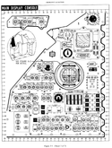

イミディエイトモードUIを採用したクロスプラットフォームの動画編集ソフトです。

Blickブログより · 英語Don’t throw it all away.
Don’t throw it all away.
Caching an immediate-mode UI
イミディエイトモードUIで描画済みのピクセルを再利用する仕組みと、消費電力への効果について。
記事を読む- コンピュートシェーダーを使うタイルベースのレンダラー。符号付き距離場（SDF）をGPU上で評価します。
- シェーダー内で解釈する小さな描画言語を使い、CPU側の描画ロジックを最小限に抑えています。
- 変化のない描画結果をキャッシュから再利用し、処理量と消費電力を減らすことを目指しています。